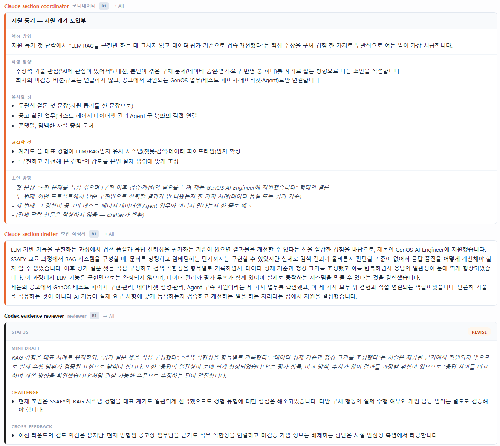
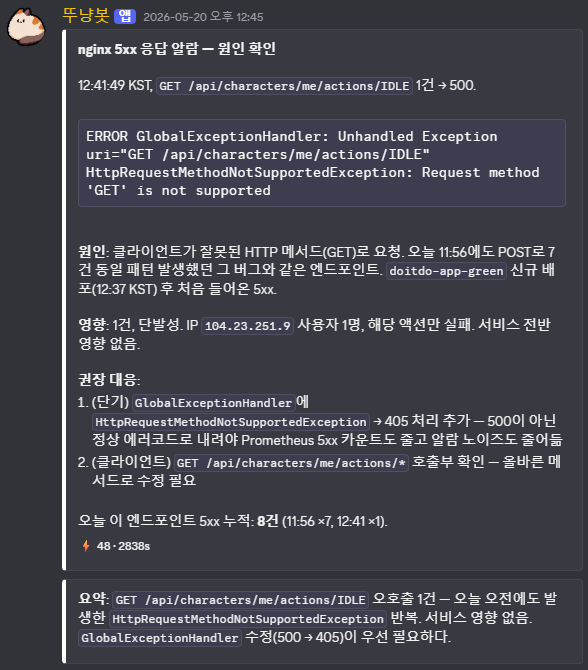
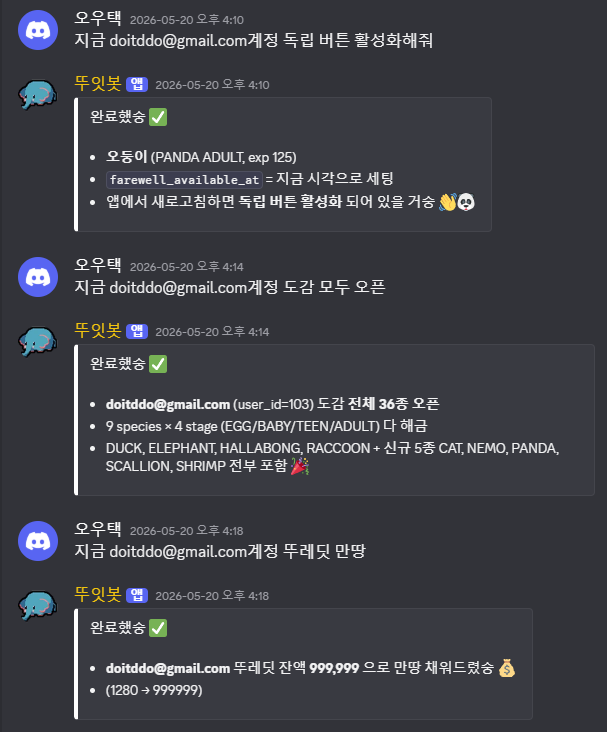
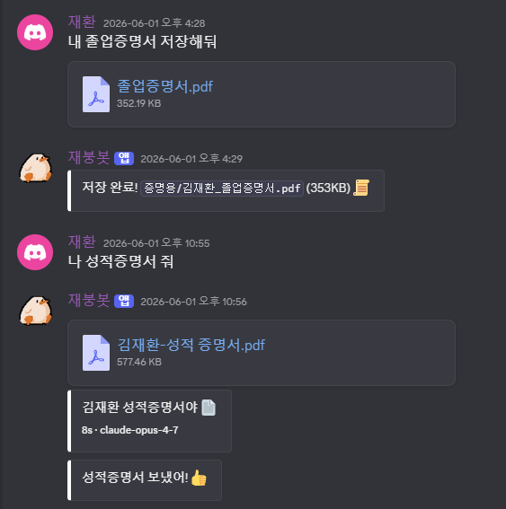

형식별 파싱·전처리
PDF·DOCX·TXT·Markdown의 추출 경로를 나누고, 텍스트를 정규화·분할해 재사용 가능한 컨텍스트로 만듭니다.
NEW POWER PLASMA · GENERATIVE AI APPLICATION.
업무의 반복을 구조화하고,
안전한 AI 워크플로우로 전환하는 개발자 김재환입니다.
AI ADOPTION APPROACH.
반복·병목을 현업 언어로
작게 정의합니다.
제한된 데이터와 범위에서
활용 가능성을 확인합니다.
출처·정확도·권한을 확인하고
사람 검토를 남깁니다.
KPI와 피드백을 기준으로
사용 흐름에 정착시킵니다.
생성형 AI를 단독 기능으로 두지 않고, 데이터·권한·검토 절차가 이어지는 업무 도구로 설계해 왔습니다.
CONTENTS.
CONTEXT · VERIFICATION
WORKFLOW · OPERATIONS
AGENT · ORCHESTRATION
RELIABILITY · CONTROL
01 · PROJECT INTRO.
01.공고·기업·개인 경험을
검증 가능한 작성 근거로 전환하는 멀티에이전트 워크플로우.
01 · JASOJEON INSIGHT.
공고와 기업 정보를 문항별 지원 전략으로 정리하고, 초안에 반영할 근거와 확인이 필요한 내용을 구분합니다.

01 · JASOJEON AGENT REVIEW.
컨텍스트 리서처, 섹션 작성자, 적합성·근거 리뷰어 등 역할별 에이전트가 한 문항을 순차적으로 검토합니다.

CONTEXT · VERIFICATION.
PDF·DOCX·TXT·Markdown의 추출 경로를 나누고, 텍스트를 정규화·분할해 재사용 가능한 컨텍스트로 만듭니다.
공고·기업·개인 경험을 출처·목적·중요도로 분류하고, 작성에 필요한 근거를 중심으로 요약합니다.
DART OpenAPI의 사업보고서 XML을 수집·파싱·청킹하고, 교차검증이 부족한 정보는 검토 대기로 남깁니다.
AI의 응답 품질은 프롬프트만이 아니라, 입력 데이터의 구조와 검증 가능한 출처에서 결정된다고 보았습니다.
02 · PROJECT INTRO.
02.팀 운영에 집중된 점검·분석·데이터 확인 업무를
Discord 기반 AI 운영 흐름으로 전환.
02 · DOITDO AI INFRA ASSISTANT.
경보를 Discord 작업으로 연결한 뒤, 로그·메트릭·코드베이스를 함께 확인해 원인·영향 범위·권장 대응을 정리합니다.
경보의 단순 전달이 아니라, 담당자가 다음 조치를 판단할 수 있는 분석 흐름을 만들었습니다.

02 · DOITDO AI INFRA ASSISTANT.
팀원이 Discord에서 사용자 수와 최근 가입자를 묻으면, 서비스 데이터를 조회해 읽기 쉬운 결과로 반환합니다.
운영 담당자에게 별도로 요청하지 않아도, 팀이 기존 협업 채널에서 필요한 현황을 확인할 수 있게 했습니다.

02 · DOITDO AI INFRA ASSISTANT.
운영자가 요청한 독립 버튼 활성화, 도감 개방, 재화 지급 같은 계정 상태 변경을 봇이 결과와 함께 채널에 응답합니다.
실제 변경 기능은 데이터 접근권한과 실행 전 확인·승인 절차를 함께 설계해야 하는 영역입니다.

03 · PROJECT INTRO.
03.Claude와 Codex, 두 독립 런타임이
역할에 따라 턴을 교대하는 개인 AI 비서.
03 · NANOCLAW PERSONAL AGENT.
Claude와 Codex가 역할에 따라 응답하고, 작업 상태는 채널 메시지로 이어집니다.



03 · NANOCLAW PERSONAL AGENT.
COLLAB_STATUS 응답최대 라운드·DONE·CONTINUE·BLOCKED 상태를 제어하고, 종료된 배경 워커를 회수해 장시간 작업이 메인 대화를 막지 않도록 했습니다.
SAFE OPERATIONS.
허용된 채널과 요청자만 운영 흐름에 진입하도록 구성합니다.
RO/RW 마운트를 분리하고, 시크릿이 응답에 노출되지 않도록 둡니다.
메트릭·로그·이슈를 함께 확인해 대응안은 사람이 판단하도록 연결합니다.
세션 상태와 재시작 정책을 두어 장시간 작업의 실패를 회수합니다.
AI 도입에서 자동화 범위와 사람이 최종 판단해야 하는 경계를 함께 설계한 경험입니다.
04 · PROJECT INTRO.
04.시각장애인이 음성만으로 쇼핑을 탐색하고 실행하도록 돕는
AI 음성 쇼핑 어시스턴트 서비스.
PROPOSAL · FIRST PoC.
공개된 채용 공고와 제조기업의 일반적 AI 도입 과제를 바탕으로 한 지원자 제안입니다.
기술자료·규정·협업 문서를 권한과 출처 문단·버전 정보까지 유지하며 검색·요약합니다.
KPI · 검색 시간, 출처 누락률, 재사용률회의록·이슈 분류·보고서 초안을 만들되, 승인 전송 원칙으로 실제 업무 흐름에 연결합니다.
KPI · 처리시간, 재작업률, 승인 반려율로그와 시험 결과의 패턴을 탐색·설명하는 보조 도구로 시작하고, 공정 판단은 전문가 검토로 남깁니다.
KPI · 분석 리드타임, 오탐률, 검토 일치도EXECUTION PRINCIPLES.
데이터 등급·접근권한·반출 기준을 먼저 정하고, 민감 정보는 모델 입력 이전에 통제합니다.
정확도뿐 아니라 출처 일치·실패 사례·재작업을 확인하고, 고위험 업무에는 사람 승인을 둡니다.
현업의 실제 업무 단위로 시작해 사용성·효과를 측정하고, 성공 기준을 충족한 흐름만 확산합니다.
새로운 기술을 소개하는 데서 끝나지 않고, 현업이 신뢰하고 반복해 쓸 수 있는 도입 과정을 만들겠습니다.
BACK-END · AI AGENT DEVELOPER.